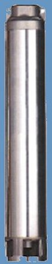

 |
|
Boca de Impulsión
En acero inoxidable 304 para una resistencia a la corrosión
y resistencia mecánica superior. Cuenta con rosca NPT
estándar.
Válvula de Retención
Fabricada en Noryl, evita que el peso de la columna de agua
regrese a la bomba y fuerce los impulsores y los difusres,
alargando la vida útil de la bomba. Nota:
en columnas mayoresa 50 m., se recomienda utilizar válvulas
de retención adiocionales, una para cada 50 m. de carga
adicional.
Impulsores
Son de diseño "FLOTANTE", es decir, no están
sujetos al eje de la bomba. Esto permite que la bomba pueda
trabajar hasta con un contenido de arena de 200 gr/m3 sin
bloquearse. Fabricados en Tecno Polímero Lexan. Son
extremadamente resistentes y tienen una superficie sin imperfecciones
que facilita el flujo de agua, con lo cual se logran excelentes
eficiencias.
Difusores
Fabricados en Noryl. Su diseño hidráulico eficiente
reduce la fricción con el impulsor.
Caja Porta Difusores
Para un mayor soporte entre las etapas esta pieza está
hecha en acero inoxidable AISI 304.
|
|
Camisa
de la Bomba
Protege el cuerpo hidráulico. Es de acero
inoxidable AISI 304.
Eje de la Bomba
De acero inoxidable AISI 304.
Protector del Cable
De acero
inoxidable AISI 304.
Soporte Intermedio
Diseñado para evitar vibración en las
bombas con muchas etapas. El soporte intermedio proporciona
estabilidad al conjunto de la bomba. Está fabricado
en Noryl y cuenta con un buje de acero inoxidable.
Malla de Succión
Para evitar la intrusión de partículas
sólidas grandes, fabricada en acero inoxidable AISI
304.
Soporte Motor
El soporte del motor está dimensionado para
cumplir con el estándar NEMA y está fabricado
en acero inoxidable 304.
COPLE
Fabricado según norma NEMA para acoplamiento
a motores sumergibles estándar de 4''.
Tornillos
De acero inoxidable AISI 304.
|